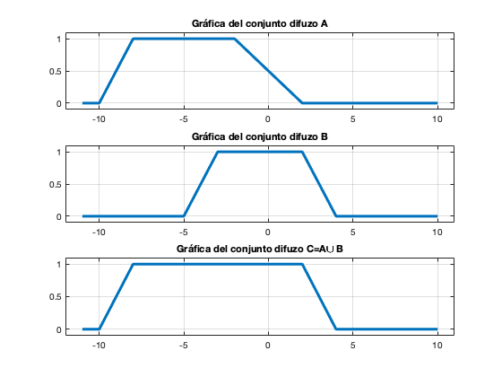
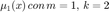

Práctica 1: Operaciones, relaciones y transformaciones en el dominio difuso
Duración: 9.5 horas
Contents
Objetivos
- Implementar operaciones de conjuntos difusos, utilizando MATLAB
- Implementar relaciones de conjuntos difusos, utilizando MATLAB
- Implementar tranformaciones de conjuntos difusos, utilizando MATLAB
Desarrollo
MATLAB cuenta con la herramienta Fuzzy Logic Toolbox, que tiene implementada la función de membresia trapmf, para consultar su documentación y ayuda
help trapmf
TRAPMF Trapezoidal membership function.
TRAPMF(X, PARAMS) returns a matrix which is the trapezoidal
membership function evaluated at X. PARAMS = [A B C D] is a 4-element
vector that determines the break points of this membership function.
We require that A <= B and C <= D. If B >= C, this membership
function becomes a triangular membership function that could have
a height less than unity. (See the example below.)
For example:
x = (0:0.1:10)';
y1 = trapmf(x, [2 3 7 9]);
y2 = trapmf(x, [3 4 6 8]);
y3 = trapmf(x, [4 5 5 7]);
y4 = trapmf(x, [5 6 4 6]);
plot(x, [y1 y2 y3 y4]);
set(gcf, 'name', 'trapmf', 'numbertitle', 'off');
See also DSIGMF, EVALMF, GAUSS2MF, GAUSSMF, GBELLMF, PIMF, PSIGMF,
SIGMF, SMF, TRIMF, ZMF.
Reference page in Doc Center
doc trapmf
Despues de consultar la documentación se implementan las siguientes gráficas
x=-3:0.001:7; y=trapmf(x,[-2, 1 3, 6]); plot(x, y, 'Color',[1 0.55 0], 'LineWidth', 3) grid on title("Gráfica de función de menbresia trapecio") axis([-4,8,-0.1,1.1])
De igualmanera se tienen las siguientes funciones de membresia implementadas
- trapmf
- gbellmf
- trimf
- gaussmf
- gauss2mf
- smf
- zmf
- psigmf
- dsigmf
- pimf
- sigmf
En la ayuda de MATLAB se puede encontrar una descripción de cada una de estas funcines así como ejemplos de gráficas, la siguiente gráfica muestra estos ejemplos
Se pueden realizar operaciones entre los conjuntos difuzos, utilizando la herramienta mencionada
x = -11:0.1:10; A = trapmf(x,[-10 -8 -2 2]); B = trapmf(x,[-5 -3 2 4]); C = max(A, B); subplot(3,1,1) plot(x,A,'LineWidth',3); grid on axis([-12,11,-0.1,1.1]) title('Gráfica del conjunto difuzo A') subplot(3,1,2) plot(x,B,'LineWidth',3); grid on axis([-12,11,-0.1,1.1]) title('Gráfica del conjunto difuzo B') subplot(3,1,3) plot(x,C,'LineWidth',3); grid on axis([-12,11,-0.1,1.1]) title('Gráfica del conjunto difuzo C=A\cup B')
Entregables
Se revisa una publicación (html) de la práctica. En este caso tendá que iniciar indicando el nombre de la práctica y sus datos personales, equipos de dos o tres personas (Portada). El índice del contenido lo genera Publish (índice). Los objetivos deben ser incluidos y se han presentado al principio de la práctica.
Como introducción investigue módulos de Python para logica difuza, puede incluir, como se instala el módulo, como se gráfican las funciones de membresia, como se operan los conjuntos difusos, ejemplos, etc., en el siguiente enlace se encuentra el repositorio oficial del módulo scikit-fuzzy, por supuesto puede buscar otras referencias.
Para el desarrollo se tienen que resolver cada uno de los siguientes problemas comenzando una nueva sección (para la publicación) en cada uno de ellos.
1. Implemente tres función que se llame fm1, fm2 y fm3 que implementen cada una de las sigeuintes funciones de membresia
Los párametros que no muestras restricción pueden tener cualquier numero real como argumento, la función debe ser capaz de evaluar tanto vectores de cualquier dimensión. La función recibe el nombre de singleton
2. Construya una función que gráfique funciones de membresia en el formato de su elección. La función debe de recibir las abscisas y las ordenadas así como las etiquetas de los ejes. No debe incluir el código, solo el uso de la función para mostrar las gráficas de los siguientes conjuntos difusos del problema anterior
(a) , (b)
(c) , (d)
(e)
Experimente con más valores de los parametros, ¿Cuál es el efecto de cada parametro para cada función?
3. Implemente una gráfica (subplot de 3x2) donde indique ejemplos especificos para ilustrar
4. Para los conjuntos difusos ,  , ,
, ,
verifique las siguientes propiedades
Para la verificación, elabore la gráfica de los conjuntos de cada lado de la igualdad y posteriormente observe que el resultado gráfico es el mismo
No es necesario incluir conclusiones en esta práctica, si lo considera necesario puede incluir apéndices, no olvide incluir sus referencias.
El código de esta publicación lo puedes encontrar en el siguiente < enlace>